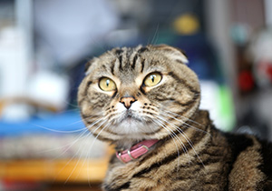
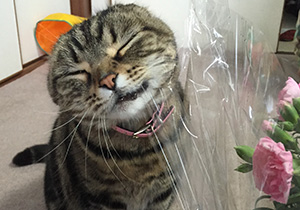

りんちゃんは茶色いスコティッシュフォールド。
最近のお気に入りは新しく買ってもらった爪研ぎで、この上がベストポジション。
個人が撮影した猫の写真をひたすら掲載していくサイトです。
うちの飼い猫りんちゃん、とその仲間の猫たちが主な被写体です。

最近のりんちゃんは新しい爪研ぎを買ってもらって、毎日ガリガリ。 爪研ぎの上は乗れるようになっているので、毎日ここでくつろいでいます。 相当気に入ったみたいで、ぜんぜんおりてこない。

母の日の花を持って言ったら、りんちゃんがものすごい勢いでよってきて、花にスリスリ。 りんちゃんは花が好きなのか！？と思ったら、周りのビニールのガサガサが好きらしい。 ビニールならなんでもいいみたい。
りんちゃんの写真はどんどん増やしていきます。
© りんちゃんの部屋